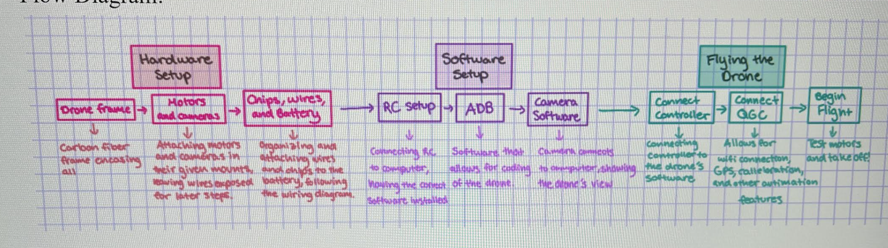

Step 01 / System decomposition
Converted the kit into an engineering workflow.
We broke the project into hardware setup, software setup, and flight validation: frame, motors, cameras, chips, wiring, battery, RC setup, ADB, camera software, controller connection, QGroundControl, and final flight testing.
- Mapped the build sequence before touching flight-critical settings.
- Separated mechanical assembly, embedded configuration, and test operations.
- Turned the workflow into an instruction manual for repeatability.